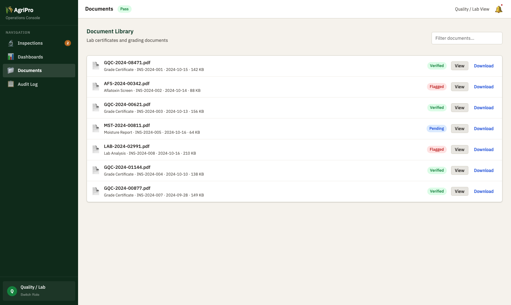
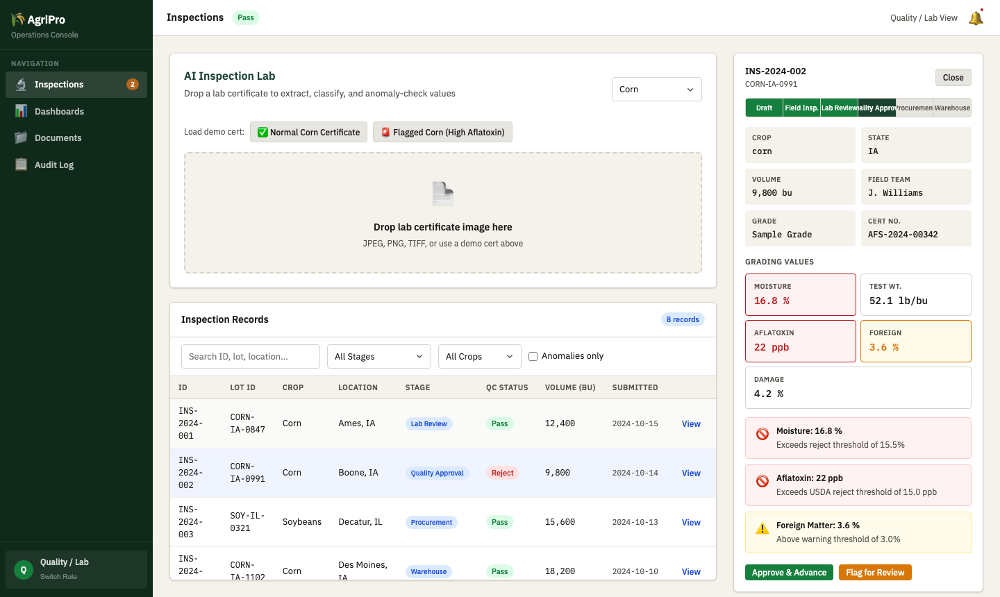

Live Demo

Drop a grain cert image. Tesseract.js extracts moisture, aflatoxin, test weight, and classifies the document type.

Out-of-band values are flagged with severity and explanation. Quality reviewers see flagged records surfaced automatically.
How It Works
Requirement Coverage
| ID | Requirement | Demo Treatment |
|---|---|---|
| R1 | Secure auth + RBAC | Live Demo Role picker gates nav, dashboard, and approval actions per role |
| R2 | Procurement campaign management | Live Demo Campaign Kanban board with state, crop, volume, status |
| R3 | Field inspection workflows | Live Demo Inspection records in pipeline with field team, GPS, timestamps |
| R4 | Lab testing and quality grading | Live Demo OCR auto-populates grading values from certificate image |
| R5 | Multi-stage approval workflows | Live Demo 6-stage pipeline bar with per-stage Approve/Flag/Reject |
| R6 | Warehouse allocation and tracking | Rich Mock Allocation grid: lot, bin, commodity, volume, status |
| R7 | File and document management | Rich Mock Document library with cert type, date, linked inspection, badge |
| R8 | Search and advanced filtering | Live Demo Client-side filter by crop, state, stage, anomaly flag |
| R9 | Operational dashboards | Live Demo 4 role-specific KPI + chart dashboards (Recharts) |
| R10 | Reporting: PDF and Excel export | Live Demo jsPDF and SheetJS export from dashboard view |
| R11 | Notifications and reminders | Rich Mock Notification tray with seeded alerts and mark-read |
| R12 | Audit logs | Rich Mock Timestamped event log; session actions appended live |
| R13 | Mobile-responsive for field teams | Live Demo Bottom tab nav + stacked card layout at <768px |
| R14 | OCR for lab certificates | Live Demo Tesseract.js WASM extracts text from dropped cert image |
| R15 | Intelligent document classification | Live Demo Keyword classifier labels cert type from OCR output |
| R16 | Anomaly detection | Live Demo Rule engine flags out-of-band values with severity + reason |
| D1 | Production-ready application | Proposal Phased delivery, test plan, containerized deploy |
| D3 | Admin portal | Proposal Management role previews concept; full admin in Milestone 3 |
| D4 | Technical documentation | Proposal API docs, data model diagrams, runbook per milestone |
| D5 | Testing before delivery | Proposal Vitest unit tests + Playwright E2E on approval flows |
| D6 | Deployment support | Proposal Docker + Nginx, CI/CD pipeline, env config management |
| D7 | Post-launch support | Proposal 30-day stabilization, SLA for critical bugs, knowledge transfer |
Why Michael
At U.S. Bank (via Turnberry) I took ownership of TDAAS within months, became the SME, and kept a 60,000-line React/Python/SQL/Java platform running for 600 users per month. If something broke, I fixed it, often within 10 minutes.
I use GitHub Copilot and Azure OpenAI in daily delivery. At Optum I am the team's go-to for AI-assisted development. The OCR, classification, and anomaly detection in this demo are the same class of AI I ship at work, not decorative.
React, Angular, Python, .NET/C#, Java, SQL, PostgreSQL, Docker, Kubernetes, CI/CD. I led the TDAAS Azure Cloud migration as the main technical representative, among the first apps the bank moved. I can own the full stack and the deploy.
Proposed Milestones
Authenticated RBAC, procurement campaigns, field inspection records, 6-stage approval pipeline, search and filtering, audit logs, mobile-responsive layout, admin portal.
Production OCR on lab cert ingestion, document classification, configurable anomaly detection, warehouse allocation, document management, notifications, role dashboards with PDF/Excel export.
Unit + E2E test suite, technical documentation, containerized deploy, CI/CD pipeline, knowledge transfer, 30-day post-launch stabilization support.